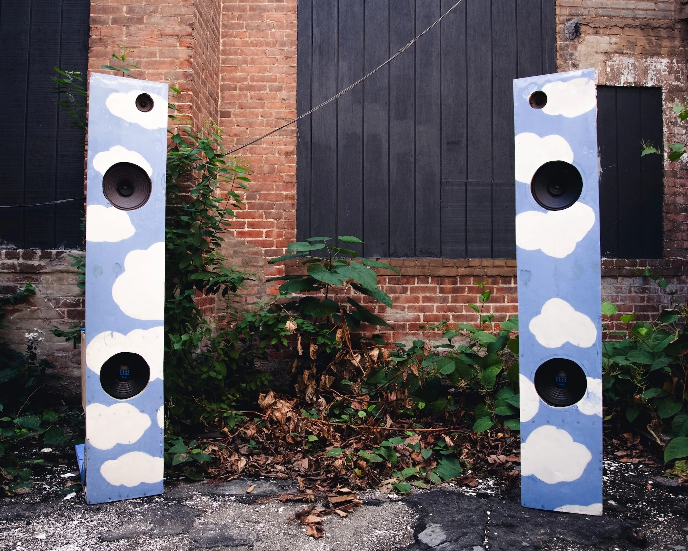
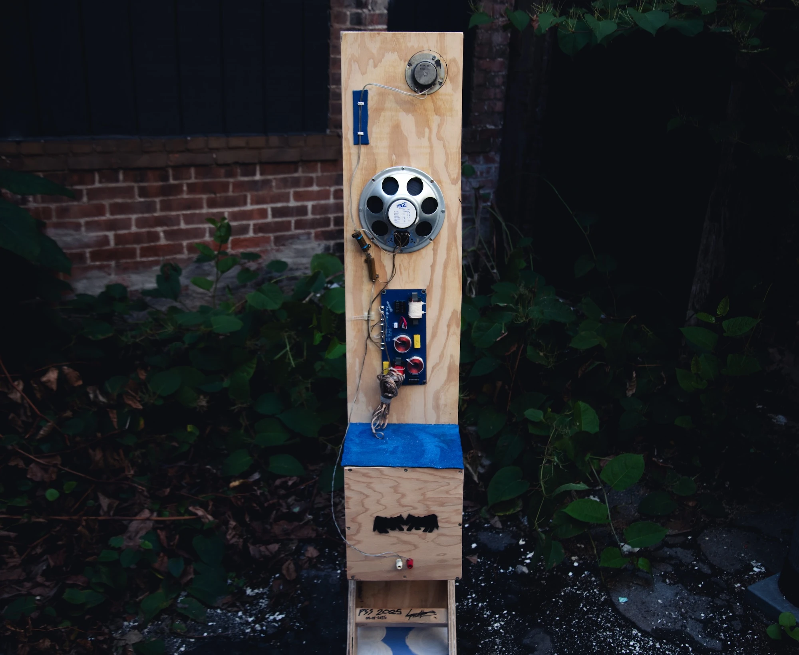
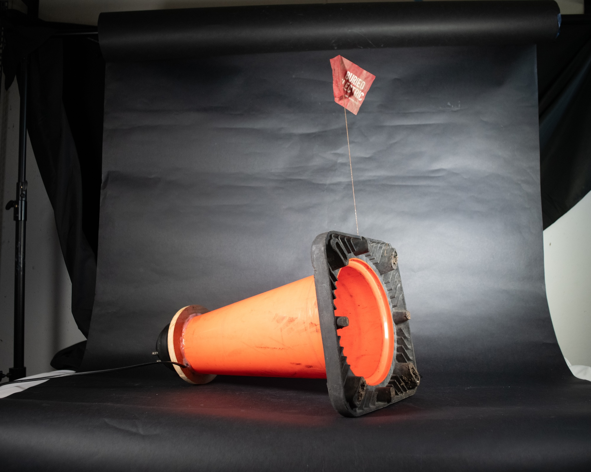

These are the ponyville clouds. See the log for more details. 3 way hybrid open baffle speaker. The mid range drivers harvested from a ceiling PA system in my stuido, are open baffle, while the tweeters and the bass driver are enclosed. The bass driver boxed are actually ported. The bass cutoff is around 300hz with the high crossover around 2800hz. The midrange drivers needed to be scaled down about 20db with power resistors.


The traffic cone calls "scream through me!" The cone is loaded with a high frequency compression driver, and designed as a 'reentrant (reflex) horn loudspeaker, or bullhorn, is a type of folded horn speaker used widely in public address systems. To reduce the size of the horn, the sound follows a zigzag path through exponentially expanding concentric ducts in the central projection, emerging from the outer horn.' The bass is the "buried electric" The speaker is the shrine, this is a sonic artifact in the sound anthology.steel, plywood, 6in full range driver, aluminum rivets, silicon, banana binding posts, speaker wire, fiberglass insulation, steel mesh, drywall screws, leather. This is an exponential speaker horn I build with Enid Corcoran for my architecture class titled Urban Metabolism. This speaker is meant to amplify mid range frequencies from an driver at the throat of the horn, specifically the sound of water rushing though the moshassuck river. The driver is 6 inches at the base of the throat. I have been using a special cable with a 60uf capacitor at around 600hz to protect the driver from bass frequencies that might blow it. The back is enclosed and ported, with fiberglass insulation to absorb the back reflections and silicon to ensure a tight seal at the base of the throat, where its 4x4 inches.
plywood, danish oil, 10in subwoofer driver (dayton audio), aluminum mesh, speaker wire, fiberglass insulation, drywall screws (steel and brass), banana binding posts, acrylic paint, mahogany. This is the second speaker me and Enid have built. It has no crossover, but is to be used as a subwoofer or mid range speaker. Its a closed enclosure design.